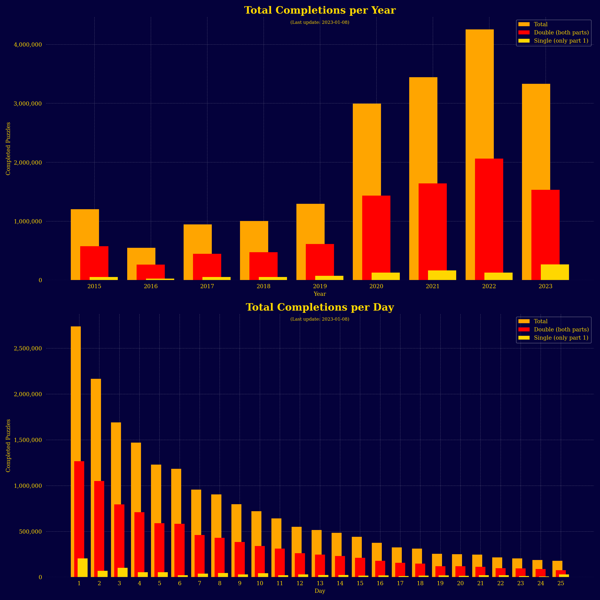

Advent of Code Puzzle Solver
Multifaceted & interactive
web app
devoted to Advent of Code solutions, data analytics & more.
Streamlit, Pandas, Numpy, Scipy, Sympy, NetworkX, Matplotlib, Seaborn
If you're not familiar with Advent of Code, here's a quick description from their website:
Advent of Code is an annual Advent calendar of small programming puzzles for a variety of skill sets and skill levels that can be solved in any programming language you like.
I'm a huge fan of these puzzles and the incredibly supportive community of people that grew around it. This app is my way of giving back to this community. It has many interactive features. For example it lets anyone enter their individual Advent of Code puzzle input for a given day and year, runs it through the corresponding solving function (more than 300 solving functions available so far). The app then displays the solution. I implemented some basic caching, such that the puzzle input, the solution for each puzzle part as well as the solution runtimes are put into a temporary storage file system – JSON and CSV files which are connected to the individual users session ID. This way the user won't need to re-enter the input for both parts or wait for the solution function to re-run, if they want to look up their answer again – most solution functions execute in under 1 second anyway, but some can take more than 20 seconds.
I recently added an entire data analytics part with lots of nice Christmas-themed visualizations. They provide insight into both my personal progress on the platform as well as community statistics, leaderboard rankings and overall puzzle completion rates. All in all, this has been the biggest, most multifaceted and gratifying of my projects so far. I'm glad to say that, in little more than a month after its launch, it has received more than 2500 unique visitors, some of whom have become regular guests. I've also received a lot of positive feedback by the Advent of Code community.